Core · Video walkthrough
Use map filters and create useful points of interest
Inspect map visibility controls, create a destination category and fictional point, and verify its persisted values and operating-map marker.
Before you begin
- Use the isolated fictional Academy training department and an authorized mapping administrator.
- Use permitted training coordinates and fictional notes; verify real operational destinations through department procedures.
Chapters
- Read the department map center
- Find named resources with the text filter
- Reduce label clutter
- Separate visibility from missing data
- Open point-of-interest management
- Configure the point category
- Review the preview and save the category
- Verify the saved category
- Enter a point with paired coordinates
- Read back the saved point
- Reopen and verify the stored values
- Locate the point on the operating map
- Inspect the point popup
- Recognize a hidden point
- Restore the point in the same view
- Distinguish POI symbols from response status
Watch the walkthrough
Step 1
Read the department map center
In Department Settings, find Address and Default Map Center GPS Coordinates. Our fictional training department has a complete latitude and longitude pair. The page explains that an explicit center takes precedence over address geocoding. Read the saved values before changing them. A department map center is a viewing reference; it does not establish a unit's current position. This recording reviews the existing center without changing or saving it.

Practice
Find Address and the complete default map-center coordinate pair without changing the department settings.
Step 2
Find named resources with the text filter
Open Mapping and enter Engine in Filter marker text. Two named engine markers remain. The training fixture includes positions in different states, so this is a filter demonstration rather than a local response recommendation. Filtering changes this map view. It does not rename resources, remove calls, or establish that a displayed unit is ready to respond.
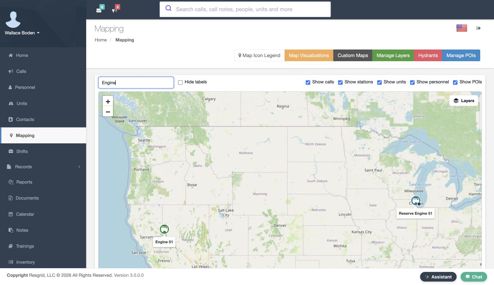
Practice
Search for a known resource name and compare the matching markers with the broader view.
Step 3
Reduce label clutter
Clear the text filter and check Hide labels. The marker symbols remain while their name labels disappear. This can reduce clutter when several objects overlap. Restore the labels while learning unfamiliar symbols, and use the category controls to decide which kinds of objects you want to inspect.
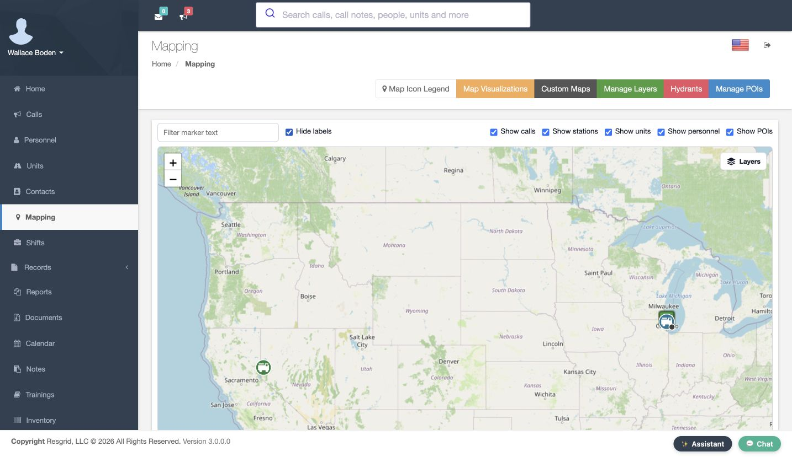
Practice
Clear the text filter, hide labels, then restore them and compare the map.
Step 4
Separate visibility from missing data
Uncheck Show units and adjust the zoom to see the three training calls. The unit markers disappear from this view while the calls remain. When a resource seems missing, check the text filter and category visibility before changing its record. Restore Show units afterward. Visibility in a map is separate from an object's saved location and operational status.
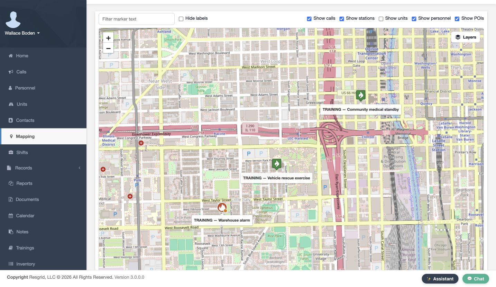
Practice
Hide units, confirm that call markers remain, then restore unit visibility.
Step 5
Open point-of-interest management
Return to the map controls and open Manage POIs. This department initially has no point types. Add POI Type creates a category for related points. A department might organize staging locations, search assembly points, security rally points, contractor access points, or industrial response destinations. Choose a category name that its users will recognize.
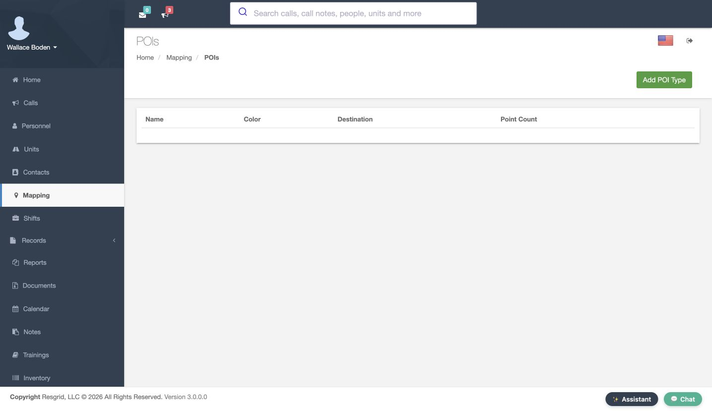
Practice
Locate Manage POIs on the map toolbar and open the category list.
Step 6
Configure the point category
Name the type Academy Staging. Check Is Destination to identify this category as potential destinations for a person or unit. Review Color, Marker and Icon. We retain the blue default color and standard pin, with no symbol selected under Icon. A destination category describes a point's intended use; it does not verify that a location is accessible or suitable for a real deployment.
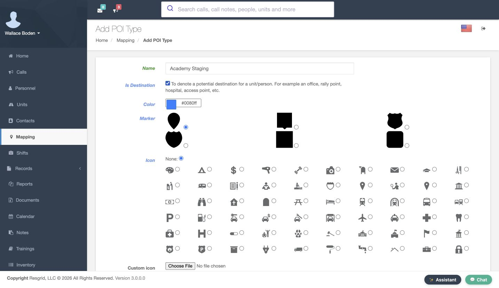
Practice
Review the training category name, destination checkbox, color, marker and icon choices.
Step 7
Review the preview and save the category
Scroll to the preview and save control. This example has no custom image, and the form says the default marker is used. The preview helps review appearance, but it is still a form. Choose Add POI Type to save the category, then read the result in the list.
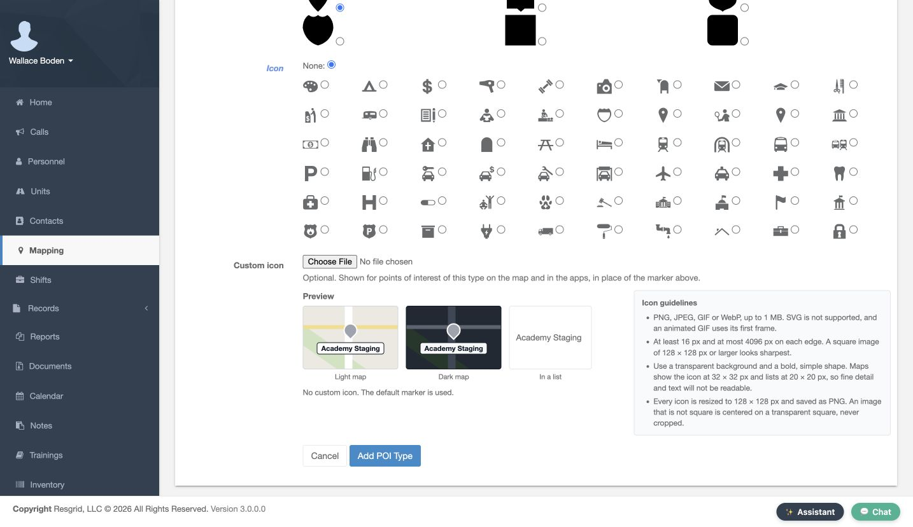
Practice
Review the category preview before saving, then verify the saved list row.
Step 8
Verify the saved category
The list now contains Academy Staging, the saved blue color, Destination Yes, and a point count of zero. View opens the category's information and map. Add creates an individual point in it. Choose Add for this example. The separate Import control is visible, but this walkthrough creates the point manually.
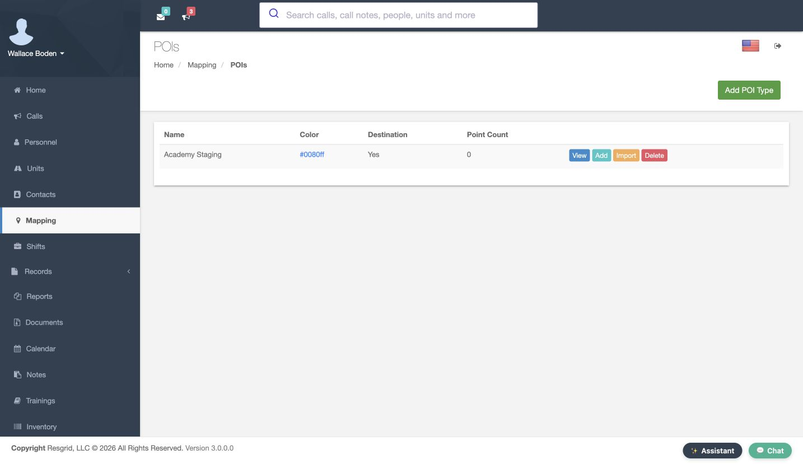
Practice
Read the saved category color, destination flag and point count before choosing Add.
Step 9
Enter a point with paired coordinates
Enter the latitude and longitude in their separate fields, using decimal notation. Name this record Academy Staging Point, enter a clearly fictional address, and add a note identifying it as an exercise location. Review the coordinate signs and the point's purpose, then choose Add POI. For community paramedicine and mental health teams, use permitted operational destinations and keep sensitive visit details out of general map notes.
Practice
Review the separate latitude and longitude fields, fictional name, address and note before Add POI.
Step 10
Read back the saved point
In the category's List tab, check the saved name, address, note, latitude and longitude. The list now contains one entry. Compare the coordinate pair with what you entered. A successful navigation alone is not enough; this stored row gives you the actual values to verify. Select Edit to reopen the record.
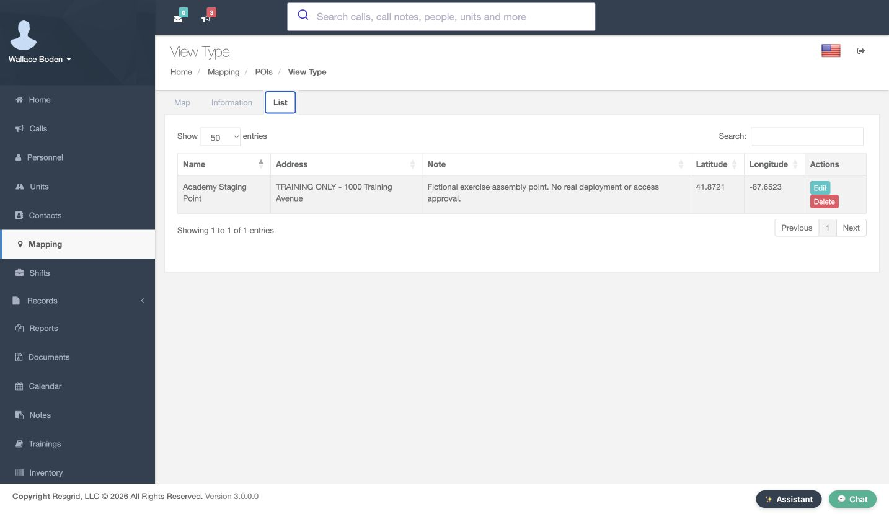
Practice
Compare the saved List row with the values entered, then reopen Edit.
Step 11
Reopen and verify the stored values
The Edit POI form reopens with the saved values. Check the record identity and both coordinates before making any future change. This recording only reads them back. Save POI is available for a deliberate edit, but we return to Mapping without changing the point.
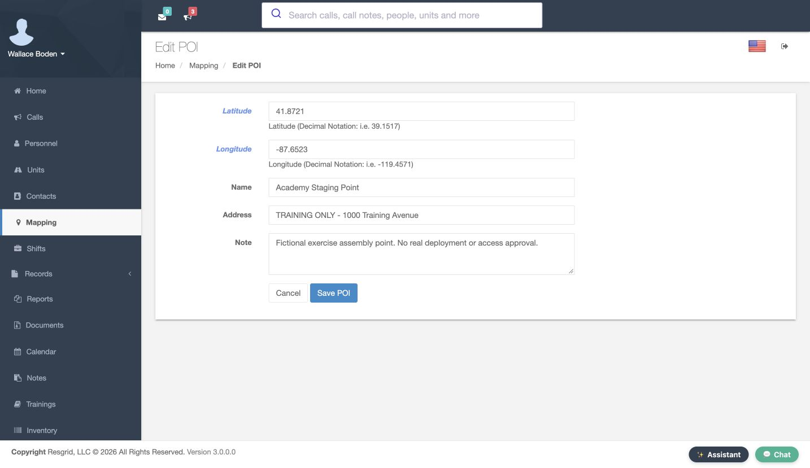
Practice
Read back the point identity and coordinate pair in Edit POI without changing the record.
Step 12
Locate the point on the operating map
On the operating map, filter for Academy Staging Point and keep Show POIs checked. The actual saved marker and its name are now visible on the map. Compare its position with recognizable surroundings. A saved coordinate can be plotted accurately and still describe the wrong intended location, so review the placement before operational use.
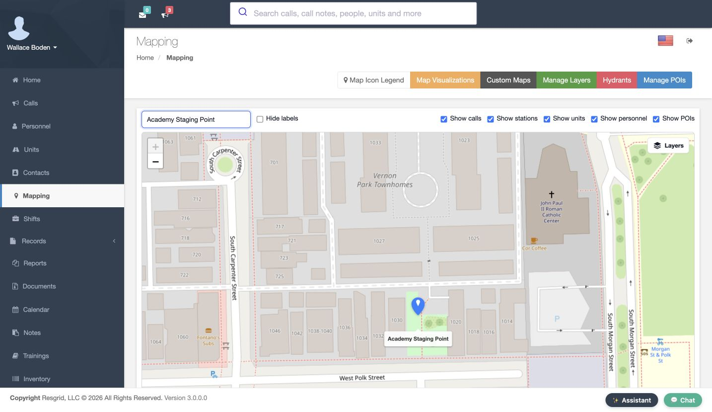
Practice
Filter for the saved point, keep Show POIs selected, and review its plotted position.
Step 13
Inspect the point popup
Open the marker to inspect its popup. Check the point name and its Academy Staging category. Use the saved List or Edit view when you need to review the complete note or exact coordinates. This connection between a named record and its actual map position is useful for search teams, security departments, wildland contractors and industrial teams as well as fire and EMS.
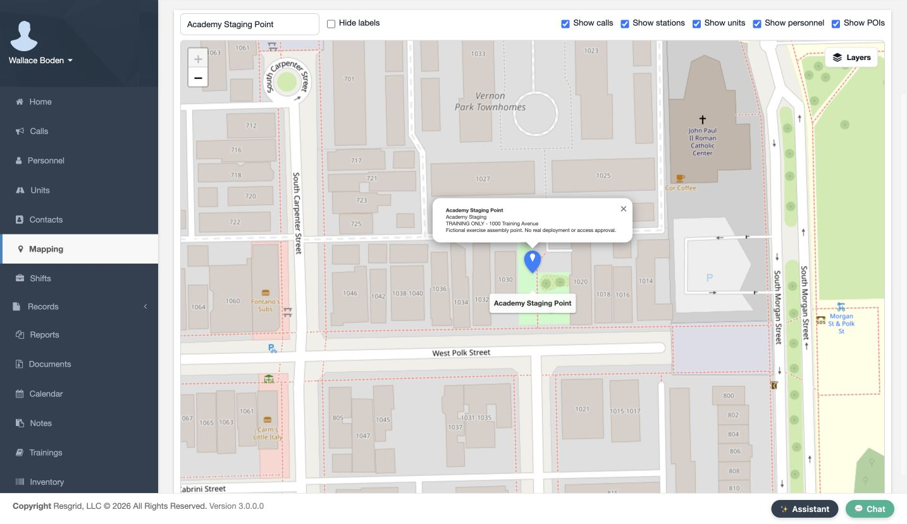
Practice
Compare the marker popup with the saved List and Edit values for the same point.
Step 14
Recognize a hidden point
Uncheck Show POIs while retaining the point's name in the text filter. The marker disappears. This does not delete the saved point. If a dispatcher cannot find a known location, this is one concrete visibility setting to check before creating a duplicate record.
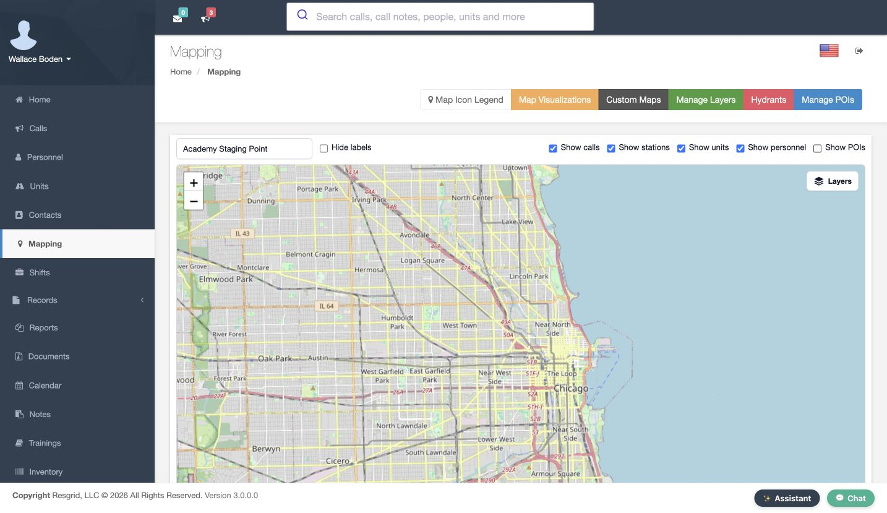
Practice
Hide POIs while retaining the point's text filter and observe the marker disappear.
Step 15
Restore the point in the same view
Check Show POIs again. The same saved marker returns without recreating or editing it. Clear the text filter when you want the broader operating picture. Keep a responsible owner for reviewing destination names, notes and coordinates as department operations change.
Practice
Restore Show POIs and confirm that the saved point returns without being recreated.
Step 16
Distinguish POI symbols from response status
Open Map Icon Legend and find Stations, hydrants and points of interest. Academy Staging now appears in that group. The legend explicitly states that these icons do not change with status. Keep this distinction clear: a staging point is a place, while a responding unit or member has a separate operational status. A location marker alone does not tell you who is available to use it.
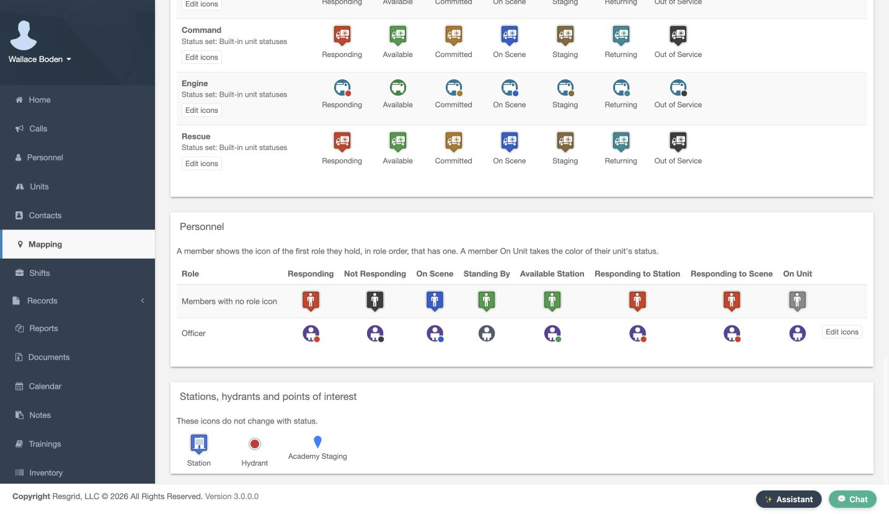
Practice
Find the category in Map Icon Legend and distinguish a location symbol from resource status.
Examples for your department
- Fire / EMS
- Organize named exercise staging points and review them on the operating map.
- Community response
- Keep permitted community paramedicine or mental health response destinations understandable without putting sensitive visit details into general map notes.
- Search and rescue
- Group named assembly locations and use category visibility to inspect them.
- Security
- Organize rally points or other permitted operational locations separately from patrol availability.
- Wildland
- Maintain named contractor assembly or access points for review by the responsible coordinator.
- Industrial
- Keep site response destinations organized in recognizable point categories.
Transcript
Download transcriptRead the complete transcript
Use map filters and create useful points of interest Audience: Dispatchers, Department administrators, Mapping coordinators Read the department map center In Department Settings, find Address and Default Map Center GPS Coordinates. Our fictional training department has a complete latitude and longitude pair. The page explains that an explicit center takes precedence over address geocoding. Read the saved values before changing them. A department map center is a viewing reference; it does not establish a unit's current position. This recording reviews the existing center without changing or saving it. Practice: Find Address and the complete default map-center coordinate pair without changing the department settings. Find named resources with the text filter Open Mapping and enter Engine in Filter marker text. Two named engine markers remain. The training fixture includes positions in different states, so this is a filter demonstration rather than a local response recommendation. Filtering changes this map view. It does not rename resources, remove calls, or establish that a displayed unit is ready to respond. Practice: Search for a known resource name and compare the matching markers with the broader view. Reduce label clutter Clear the text filter and check Hide labels. The marker symbols remain while their name labels disappear. This can reduce clutter when several objects overlap. Restore the labels while learning unfamiliar symbols, and use the category controls to decide which kinds of objects you want to inspect. Practice: Clear the text filter, hide labels, then restore them and compare the map. Separate visibility from missing data Uncheck Show units and adjust the zoom to see the three training calls. The unit markers disappear from this view while the calls remain. When a resource seems missing, check the text filter and category visibility before changing its record. Restore Show units afterward. Visibility in a map is separate from an object's saved location and operational status. Practice: Hide units, confirm that call markers remain, then restore unit visibility. Open point-of-interest management Return to the map controls and open Manage POIs. This department initially has no point types. Add POI Type creates a category for related points. A department might organize staging locations, search assembly points, security rally points, contractor access points, or industrial response destinations. Choose a category name that its users will recognize. Practice: Locate Manage POIs on the map toolbar and open the category list. Configure the point category Name the type Academy Staging. Check Is Destination to identify this category as potential destinations for a person or unit. Review Color, Marker and Icon. We retain the blue default color and standard pin, with no symbol selected under Icon. A destination category describes a point's intended use; it does not verify that a location is accessible or suitable for a real deployment. Practice: Review the training category name, destination checkbox, color, marker and icon choices. Review the preview and save the category Scroll to the preview and save control. This example has no custom image, and the form says the default marker is used. The preview helps review appearance, but it is still a form. Choose Add POI Type to save the category, then read the result in the list. Practice: Review the category preview before saving, then verify the saved list row. Verify the saved category The list now contains Academy Staging, the saved blue color, Destination Yes, and a point count of zero. View opens the category's information and map. Add creates an individual point in it. Choose Add for this example. The separate Import control is visible, but this walkthrough creates the point manually. Practice: Read the saved category color, destination flag and point count before choosing Add. Enter a point with paired coordinates Enter the latitude and longitude in their separate fields, using decimal notation. Name this record Academy Staging Point, enter a clearly fictional address, and add a note identifying it as an exercise location. Review the coordinate signs and the point's purpose, then choose Add POI. For community paramedicine and mental health teams, use permitted operational destinations and keep sensitive visit details out of general map notes. Practice: Review the separate latitude and longitude fields, fictional name, address and note before Add POI. Read back the saved point In the category's List tab, check the saved name, address, note, latitude and longitude. The list now contains one entry. Compare the coordinate pair with what you entered. A successful navigation alone is not enough; this stored row gives you the actual values to verify. Select Edit to reopen the record. Practice: Compare the saved List row with the values entered, then reopen Edit. Reopen and verify the stored values The Edit POI form reopens with the saved values. Check the record identity and both coordinates before making any future change. This recording only reads them back. Save POI is available for a deliberate edit, but we return to Mapping without changing the point. Practice: Read back the point identity and coordinate pair in Edit POI without changing the record. Locate the point on the operating map On the operating map, filter for Academy Staging Point and keep Show POIs checked. The actual saved marker and its name are now visible on the map. Compare its position with recognizable surroundings. A saved coordinate can be plotted accurately and still describe the wrong intended location, so review the placement before operational use. Practice: Filter for the saved point, keep Show POIs selected, and review its plotted position. Inspect the point popup Open the marker to inspect its popup. Check the point name and its Academy Staging category. Use the saved List or Edit view when you need to review the complete note or exact coordinates. This connection between a named record and its actual map position is useful for search teams, security departments, wildland contractors and industrial teams as well as fire and EMS. Practice: Compare the marker popup with the saved List and Edit values for the same point. Recognize a hidden point Uncheck Show POIs while retaining the point's name in the text filter. The marker disappears. This does not delete the saved point. If a dispatcher cannot find a known location, this is one concrete visibility setting to check before creating a duplicate record. Practice: Hide POIs while retaining the point's text filter and observe the marker disappear. Restore the point in the same view Check Show POIs again. The same saved marker returns without recreating or editing it. Clear the text filter when you want the broader operating picture. Keep a responsible owner for reviewing destination names, notes and coordinates as department operations change. Practice: Restore Show POIs and confirm that the saved point returns without being recreated. Distinguish POI symbols from response status Open Map Icon Legend and find Stations, hydrants and points of interest. Academy Staging now appears in that group. The legend explicitly states that these icons do not change with status. Keep this distinction clear: a staging point is a place, while a responding unit or member has a separate operational status. A location marker alone does not tell you who is available to use it. Practice: Find the category in Map Icon Legend and distinguish a location symbol from resource status. Examples for your department Fire / EMS: Organize named exercise staging points and review them on the operating map. Community response: Keep permitted community paramedicine or mental health response destinations understandable without putting sensitive visit details into general map notes. Search and rescue: Group named assembly locations and use category visibility to inspect them. Security: Organize rally points or other permitted operational locations separately from patrol availability. Wildland: Maintain named contractor assembly or access points for review by the responsible coordinator. Industrial: Keep site response destinations organized in recognizable point categories.